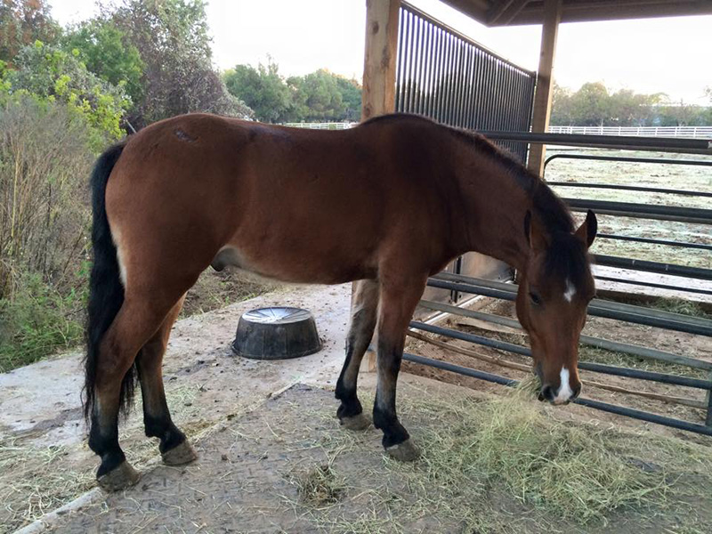

10/29/15 Topper
Arriving
Topper arrived after dark, and we had to deal with
Emma and Miaren being very curious. At one point they
got together, but there was only one bite mark on Topper
the next day.
Topper
is so much smaller than the other two. First meetings were ok, but eventually I moved Emma back out to the parents' house
because she was bullying too much.

Happy for hay.

It worked best with double fence blocks when there was feed involved for the first few days.
He wasn't that fuzzy and he had shoes on to start.
As
soon as it rained he was happy to roll in the mud.
The first try at a blanket was humorous. It did keep him a little warm that first night he got cold.
And a bigger blanket. It hangs a bit low, but works well for keeping him dry and warm.
A couple of months later grazing in the driveway. He's gotten his winter coat and can handle the cold better.
He
and Miaren are friends, but Miaren is sure to keep him in line if I'm not around. Miaren's always
been low man, so he's taking is roll more seriously than he needs to.